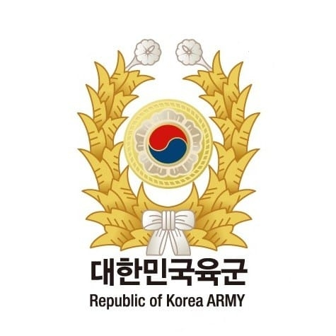
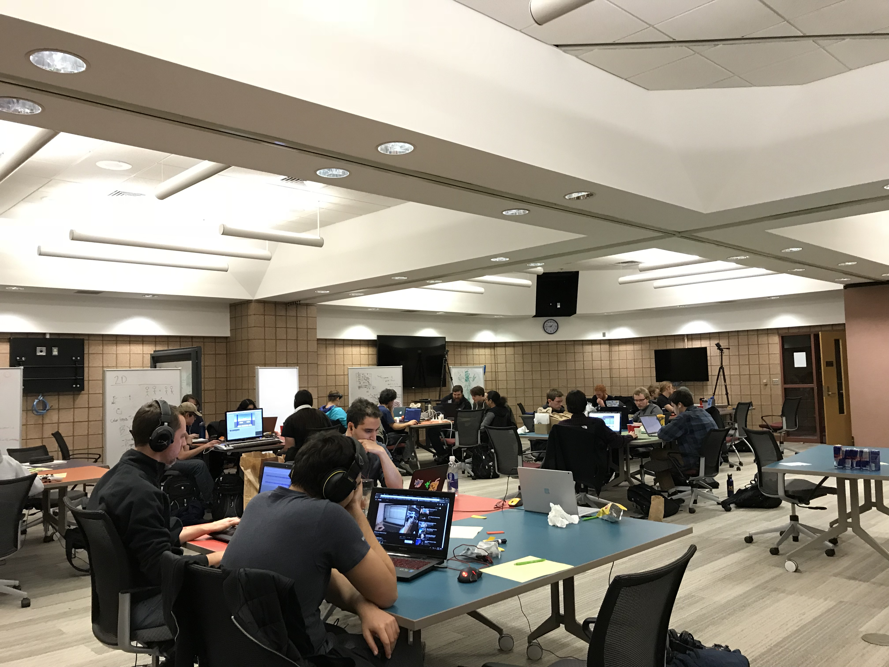
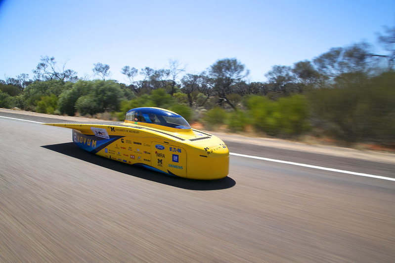

I've been working as a Full Stack developer at Tulip. I first began my career in the "Apps" team, which is a
frontend driven team that's responsible for delivering the main product of Tulip: the app editor. In the apps team,
Some of my main contributions include: standardization of error handling pages to a single organized React component,
implementation of the user-driven multilingual feature of the apps, and memory performance enhancement by resolving
a critical issue with our scalability for customers with large number of apps.
The memory performance enhancement project above led to a whole new team called "Lifecycle" team within our company,
where the main focus was to first update the outdated
import/export system which had similar
scalability and stability issues. After moving to the Lifecycle team, my primary contribution was the design and
implementation of the new Typescript oriented RESTful API system between the Apps service and the new import/export
service.
Currently I'm working in the "Access" team which primarily focuses on the user account management system and the
control of their access to the features within our product. Some of my major contributions include new user-related
service implementation and custom user role feature,
granting more freedom in selecting the permissions for users within the platform. Currently (October 2024), I'm leading
a project to introduce grouping of these users
in which they can be operated on as a bulk. This has been a very popular request fomr the customers, so that they can
remove a lot of inconveniences in having to hard code whenever the customers have to configure users in a bulk, improving
the generic scalability of our product when used in a large scale.
I worked as the leader of the Technology Canvas subteam, responsible for the improvement of
user convenience and ease of access through a re-design of the UI system and the corresponding data structures
of an automobile software that tracks vehicle occupant behavior and pedestrians.
Utilizing the PyQt5 library, I introduced and adapted a new user friendly interface and platform
for the creation of the bounding box used for labeling objects within frames. Other tasks included the analysis
of the codes written by the past project programmers for the improvement of the readability and the overall code design.

I served my mandatory military service at the 36th Infantry Division, 109th regiment in
Korea as a machinegunner, and was assigned as a squad leader in October 2018 until
I completed my service. I led a small team supporting operations
and security, and managed disciplinary actions to improve the squad’s combat effectiveness.
In February 2018, the military provided the government security and
workforce for the Pyeong Chang Winter Olympics. My responsibilities included
security maintenance in the Alpensia Sliding Center for games such as Skeleton,
Luge and Bobsleigh, and also worked as a translator between the staff and the athletes.

Wolverine Soft is an organization in the University of Michigan where the members meet
regularly to discuss, make critiques and share their knowledge about video game development
using Unity Engine. Members also participate in a game development marathon event called
the Game Jam in which teams consist of programmers, sound engineers and artists develop a
fully furnished game within 48 hours.

University of Michigan Solar Car Team is a team that aims for the annual
World Solar Challenge. I was initially stationed in the Electrical division, where I was
responsible for the design of the cell connections of the battery of the car using
Computer Aided Design(CAD) such as Siemens NX and Altair Hyperworks.
Later I was re-stationed to the Mechanical division where I designed and optimized the
rear suspension system of the car and developed mathematical equations & algorithms for
the calculation of the force distribution of the system using Matlab.